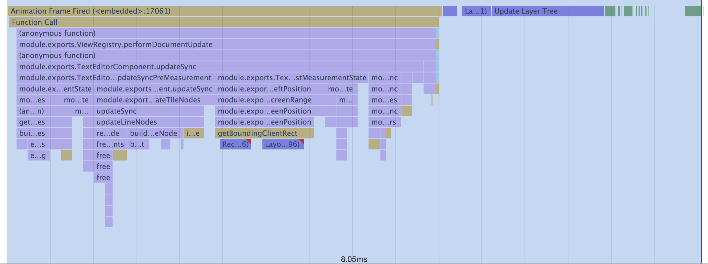
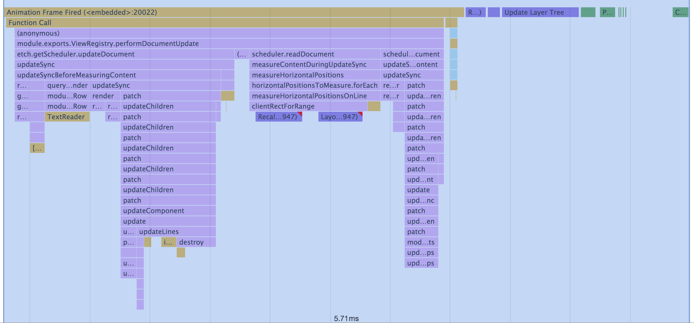
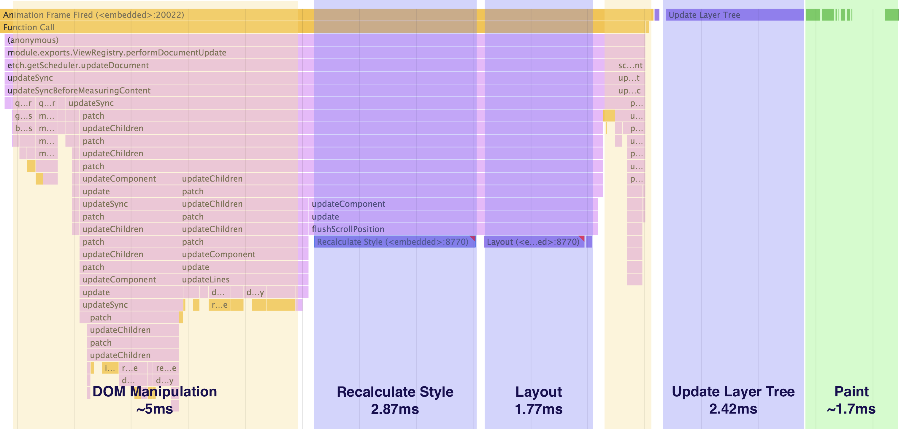

A new approach to text rendering
June 22, 2017 nathansobo
Tweet
In Atom 1.19, we’re landing a complete rewrite of the text editor’s DOM interaction layer that improves rendering performance and simplifies the code. Prompted by the availability of some valuable new DOM APIs with the upgrade to Electron 1.6, we decided to start over from the beginning and take a critical look at the structure and performance of every aspect of our DOM interaction. You should observe the biggest difference when scrolling. Here is a typical frame after scrolling by 15 lines before and after the rewrite:
Before: Scrolling 15 lines in Atom 1.18 (~30ms):

After: Scrolling 15 lines in Atom 1.19 (~16ms):

About a 50% improvement, give or take some noise on any given frame.
You should also experience more responsive typing. Here’s a before-and-after for a typical frame following a character insertion:
Before: Rendering a character insertion in Atom 1.18 (~8ms):

After: Rendering a character insertion in Atom 1.19 (~5.7ms):

In this case the speedup is around 30%. We’re seeing similar improvements for other common updates such as cursor and selection movements.
In the rest of this post, we’ll share some highlights from this rewrite to give you a sense of how things have changed.
Back to a virtual DOM
Building a text editor on top of the DOM requires a disciplined interaction with the document. To minimize overhead for style recalculation and layout, we only render the lines that are actually visible on screen in a given frame. In addition, we use absolutely-positioned elements to render cursors, selections, and overlays like the autocomplete menu. This requires us to measure horizontal character positions directly from rendered content in order to support mixed font weights, variable-width characters, and ligatures, which means we need to break each frame into a pre- and post-measurement update. We also recycle the nodes making up the lines and line numbers to minimize pressure on the garbage collector. For all these reasons and more, we deliberately stuck to a rather low level of abstraction for the previous editor implementation.
Since that time, however, we have developed a small, focused library for DOM manipulation called Etch that was largely inspired by our experience with Atom’s text editor. We’ve been using it in many of Atom’s bundled packages for a while now, but this is the first time we have used it in core. The main idea behind Etch is to offer a React-like abstraction based on tree diffing for updating the DOM, but with a strong focus on encapsulation and clean interoperation with other libraries in a multi-tenant document. Mixing manual DOM manipulation with declarative code feels very natural in Etch, and while JSX is supported, Etch is also designed to be used without a transpiler.
Using Etch, we switched the majority of our manual DOM manipulation code over to a virtual DOM and removed a ton of boilerplate in the process. We continue to construct lines and line numbers manually with imperative DOM APIs to obtain the best possible performance for our most intensive update paths and to recycle DOM nodes.
Intersection and resize observers
As we mentioned earlier, we only render the visible lines in any given frame. This means we need to measure the dimensions of the editor and the height of our lines, and we need to respond when these dimensions change due to font size changes or changes to the document’s structure. If we decide to re-measure and the editor isn’t currently visible, we need to wait until it becomes visible again before performing our measurements.
Prior to Electron 1.6, however, there weren’t a lot of tools for detecting these kinds of changes to the document. A simple solution would have been to expose methods on the editor that could be manually called to update dimensions, but that would have been annoying and error-prone for package authors that want to use editors outside of Atom’s panes. So unfortunately, the best solution we could come up with prior to Atom 1.19 was a global MutationObserver that scheduled lightweight measurements whenever the document changed. While that approach worked and we were never able to measure a serious performance consequence, globally associating any amount of work with DOM manipulation made us uneasy, and we were anxious for better APIs that could enable a more targeted solution.
With improvements to the IntersectionObserver API and the introduction of the ResizeObserver API behind a flag in Chrome 56, however, we finally have a sane approach to detecting changes to editor dimensions and visibility in a fine-grained way. We now use intersection observers to detect when editors are hidden and shown and resize observers to detect when editors change size. We’ve deleted the global mutation observer and any potential performance tax it was imposing on DOM manipulation.
CSS containment
Another valuable feature that’s become available since we last worked on editor rendering is CSS containment declarations, which allows us to tell the browser that the contents of a particular element don’t affect the layout and painting of external elements. This leads to the browser performing work on smaller subtrees of the document when elements are updated.
In our rewrite, we used contain: strict on as many elements as possible, basically whenever we were able to assign an explicit height and width on an element. For example, we break the lines and line numbers into explicitly-sized tiles that contain six lines each, then apply strict containment to the tiles. This means that for a given edit, only a subset of the lines in the editor will be invalidated.
New decoration APIs
Soon after getting the rewritten editor into a usable state, we learned that our changes ran afoul of some monkey-patching being performed in the vim-mode-plus and pigments packages. Rather than having them port their monkey-patches to the new rendering system, we decided to add support for what they were trying to achieve via official decoration APIs.

To support the pigments package, which changes the foreground and background color of CSS color expressions, we added text decorations. These are similar to highlight decorations, in that you associate a class or inline style with a marker’s range, but text decorations are rendered by injecting spans around runs of text that intersect the marked range. This makes it easy to apply arbitrary styling such as changing the foreground and background colors or font weight. However, font size won’t work for now because we don’t yet support variable line heights in the editor.
For vim-mode-plus, we added cursor decorations, which allow you to apply classes or inline styles to Atom’s cursors by decorating a cursor’s associated marker. You can also create and style your own synthetic cursors by passing a non-selection marker, which might be useful for packages that implement pair programming.
Next steps
Rendering has improved a lot and things should feel smoother, but there’s still room for improvement. Let’s take another look at a typical frame when scrolling downward by half a screen (around 15 lines).

One frustrating component of the above breakdown is the time spent recalculating styles. At this point, it looks like the only way to solve this within the current paradigm is to use CSS less and reduce the number of selectors in the application, but that’s going to be a hard fought battle given the huge number of themes in the ecosystem. Another option is to skip CSS entirely for the purposes of applying syntax highlights and use a proprietary system to render inline styles, but that would raise the barrier to entry for theme developers and break Atom’s huge ecosystem of existing themes. Instead, it’s looking like our best option might be to continue to support CSS selectors for theming, but to implement our own custom code path for matching them against nodes in our syntax tree. This would allow us to render fewer overall nodes and reuse work across nodes with a common syntactic ancestry.
But if we’re going so far as to bypass Chrome’s CSS engine, maybe we should try to bypass the DOM entirely. If you look at the above flame graph, a huge percentage of our frame time is going to DOM manipulation (highlighted in yellow) and DOM-related overhead (highlighted in purple). If we could eliminate this work, rendering a frame would only involve executing some domain-specific update logic and painting, which could be fraction of the current time. Next time we cycle back to this area of the code base, we’d like to explore using the canvas API to render the most intensive parts of the editor such as the lines and line numbers. Now that our text storage has been ported to C++ (which also landed in 1.19), we could even move the rendering code to C++ (along with the DisplayLayer’s spatial index) to minimize overhead even further.
For now, however, we need to move on to improving other areas of the system. If anyone reading this is interested in contributing and would like to give canvas a shot, please reach out to us on Slack or open an issue and we’d be keen to facilitate if you’re serious.